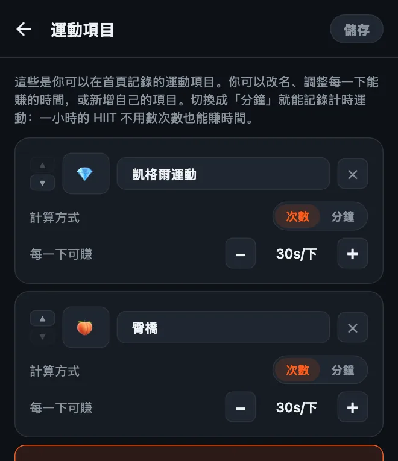
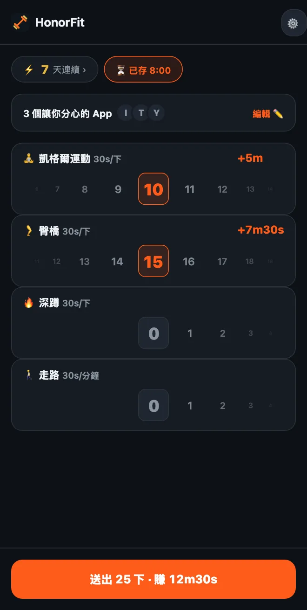

做凱格爾運動來解鎖手機
嗨大家好！我做 HonorFit，是因為我想在自己和 IG 之間擋上幾下伏地挺身，又不想把手機架起來讓鏡頭幫我數（在加油站這樣做，真的不是我人生的高光時刻 XD）。你做完、自己記下來，App 就解鎖了。
不過伏地挺身不是每個人都適合。而且最適合這整個概念的運動，其實根本不是伏地挺身，而是凱格爾運動和臀橋。下面說明為什麼，還有怎麼設定。
為什麼凱格爾運動跟誠實制這麼搭
凱格爾運動沒有人看得到。公車上坐你旁邊的人看不到，同事看不到，手機鏡頭更不用說。用鏡頭數次數的 App，根本沒辦法數這個。
HonorFit 也不打算數。它用的是誠實制（英文）：你做完，把滾輪轉到你做的次數，就好了。所以你可以在開會的時候、在超市排隊結帳的時候、窩在沙發上的時候賺 TikTok 時間，沒有人會知道。
它也解決了大家講到凱格爾運動都會說的那句：「我知道應該要做，只是一直忘記。」如果你一天會伸手拿手機好幾次（沒有要批評你，我也是），現在每一次都是提醒。
臀橋雖然不是隱形的，但在地板上甚至床上都很好做，不需要器材，跟凱格爾運動也很搭。
怎麼設定
從 1.15.0 版開始，這些都免費：不用 Pro 也能新增最多 3 個自己的運動，而且凱格爾運動和臀橋都是點一下就能加入的建議項目。（Pro 在美國是每月 3 美元或一次買斷 19.99 美元，可以無限新增；各國價格和幣別不同，商店會顯示你當地的價格。）做法如下：
- 在首頁點齒輪，再點運動項目卡片。
- 點建議項目裡的凱格爾運動，再點臀橋。不用打字，而且它們自帶表情符號：凱格爾運動是 💎，臀橋嘛，沒錯，是 🍑。
- 用 −/+ 按鈕設定每一下可賺（我的建議在下面）。
- 用 ✕ 刪掉你不會用的項目（引體向上之類的？），然後點儲存。

編輯畫面的完整說明，包括計時運動，在HonorFit 怎麼自訂運動項目這篇裡。
每一下該賺多少螢幕使用時間？
如果是我，會從這裡開始：
| 運動項目 | 每一下可賺 | 一組大概可賺 |
|---|---|---|
| 💎 凱格爾運動 | 30 秒 | 10 下 = 5 分鐘 |
| 🍑 臀橋 | 30 秒 | 15 下 = 7 分 30 秒 |
| 🚶 走路（計時） | 每分鐘 30 秒 | 走 20 分鐘 = 10 分鐘 |
所以一組 10 下凱格爾運動加 15 下臀橋，大概可以賺 12 分半。再從這裡微調。如果時間太容易累積，就把數值調低。如果你發現自己在記沒做的次數，代表價格太高了，就把價格降低（把每下的價值調高）。

關於凱格爾運動有一件事：不是越多越好。像 MedlinePlus 和 Cleveland Clinic（都是英文網站）這類健康資訊網站，通常說的是一組大約 10 下、一天做幾次，也提到做太多可能會讓肌肉變得太緊繃。所以拜託不要變成做 100 下凱格爾運動換一小時 YouTube！這也是為什麼我會給凱格爾運動一個還不錯的每下數值，讓臀橋、深蹲或走路去負責比較大的時間。
基本動作
我是 App 開發者，不是教練也不是物理治療師，所以這裡只是大概的概念。上面的連結有正確的做法說明。
- 凱格爾運動：收緊你憋尿時會用到的肌肉，維持幾秒，然後完全放鬆幾秒。這樣算一下。記得持續呼吸，盡量不要用到肚子、大腿或屁股的力量。（尿到一半停下來，是用來找到這些肌肉一次的方法，不是平常要練習的。）
- 臀橋：躺平，膝蓋彎曲，腳掌踩地。夾緊臀部，把髖部往上抬，直到肩膀到膝蓋成一直線，停一下，再慢慢放下來。這樣算一下。有些人喜歡在最高點順便做一下凱格爾運動。
如果你懷孕中、在產後、有骨盆疼痛，或做凱格爾運動會痛，請先問你的醫師或骨盆底物理治療師。他們能告訴你什麼適合你的身體，有時候答案會是「現在先不要做凱格爾運動」，這也沒關係。你可以改用他們建議的運動來設定 HonorFit。
幾個小建議
- 保持三到四個運動項目。像凱格爾運動、臀橋、深蹲和走路這樣的組合，坐著、躺著、出門在外都顧得到。每個項目都有自己的滾輪，所以越少越好用。
- 有出門的日子就用計時運動。把運動項目切成分鐘（或點走路、瑜伽的建議），散步或上一堂課也能賺時間。
- 儲存的組合（Pro，在「設定」裡開啟）可以存最多 3 組次數組合，例如「10 下凱格爾運動 + 15 下臀橋」，點一下就能套用。
- 封鎖一兩個 App 就好，不要全部封鎖。就是那個吃掉你整個晚上的。
如果凱格爾運動也不適合你，我也整理了一些低衝擊、在辦公桌就能做的選擇。
HonorFit Blocker 是 iPhone 和 Android 上的免費 App 封鎖工具。誠實制、不用鏡頭，資料都不會離開你的手機。凱格爾運動、臀橋和最多 3 個自訂運動都免費。也許你們有些人會喜歡它！